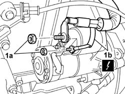
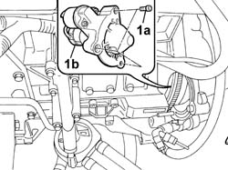
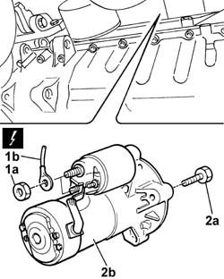
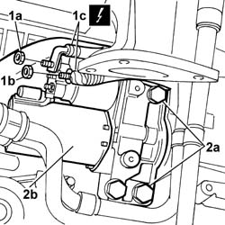

5520B10 STARTER MOTOR - R+R
- Path
- Procedures > 55 ELECTRICAL EQUIPMENT > 5520 ENGINE STARTING > 5520B STARTER MOTOR AND COMPONENTS > 5520B10 STARTER MOTOR - R+R
- Kind
- repair procedure (removal / refitting; the operation number is the code)
- Applies to
- all engines; all production periods
- Interactive page
- https://sloeber94.github.io/elrnDB-fUlss/en/#/179007556
Applies to: engines: 2.0 16v; all production periods
 Removing
Removing
 Refitting
RefittingOp. 5530B56 BATTERY DRIP TRAY COVER - R.R.
- Disconnect the negative battery terminal.
Op. 5010B18 CLIMATE CONTROL UNIT AIR INTAKE - R.R.
See in Op. 1048A10
Op. 1048A39 SLEEVE FROM AIR CLEANER TO RIGID PIPE - R R
Op. 1048A31 RIGID PIPE CONNECTING AIR CLEANER TO INLET MANIFOLD RIGID PIPE R R
Op. 1056B15 THROTTLE BODY INTERGRAL WITH MDS - R R
See in Op. 1072B10
1. Undo the fixing nuts (1a) and move the electrical wiring (1b) aside.

Applies to: engines: 2.0 16v; all production periods
1. Undo retaining bolts (1a) and remove starter motor (1b).

Applies to: engines: 2.0 16v; all production periods
Refitting
Removing- Fit the starter motor in its housing.
- Tighten the bolts fixing the motor.
- Tighten the nuts fastening the wiring removed previously.
See in Op. 1072B10
Op. 1056B15 THROTTLE BODY INTERGRAL WITH MDS - R R
Op. 1048A31 RIGID PIPE CONNECTING AIR CLEANER TO INLET MANIFOLD RIGID PIPE R R
Op. 1048A39 SLEEVE FROM AIR CLEANER TO RIGID PIPE - R R
See in Op. 1048A10
Op. 5010B18 CLIMATE CONTROL UNIT AIR INTAKE - R.R.
- Connect the negative battery terminal.
Applies to: engines: 2.0 16V JTD, 2.2 16V JTD; all production periods
Removing
RefittingOp. 5530B56 BATTERY DRIP TRAY COVER - R.R.
- Disconnect the negative battery terminal.
- Position the vehicle on the lift.
Op. 7055B54 UNDER-ENGINE GUARD - R R
See in Op. 1048B22
1. Undo the nuts (1a) and disconnect the starter motor supply leads (1b).
2. Undo the retaining bolts (2a) and remove starter motor (2b).

Applies to: engines: 2.0 16V JTD, 2.2 16V JTD; all production periods
Refitting
Removing- Fit the starter motor and tighten the retaining bolts to torque.
- Connect the starter motor electrical wiring and close the protective cover.
See in Op. 1048B22
Op. 7055B54 UNDER-ENGINE GUARD - R R
- Remove the vehicle from the lift.
- Connect the negative battery terminal.
Applies to: engines: 3.0 24V V6; all production periods
Removing
Refitting- Position the vehicle on the lift.
- Disconnect the negative battery terminal.
Description | Connector | |
|---|---|---|
. | Battery | A001B |
Op. 1016A42 LEFT HAND CYLINDER HEAD IGNITION COIL COVER - R+R
Op. 7055B54 UNDER-ENGINE GUARD - R R
Op. 1080B38 LEFT CATALYTIC PRECONVERTER R R OR REPLACE CYLINDER HEAD GASKET
1. Undo the nuts (1a) and (1b) and disconnect the leads (1c) from the starter motor.
- 1c - Starter motor A020
2. Undo the retaining bolts (2a) and remove starter motor (2b) from the engine.

Applies to: engines: 3.0 24V V6; all production periods
Refitting
Removing- Position the starter motor and tighten the bolts.
- Connect the electrical leads to the starter motor terminals and tighten the nuts.
- Starter motor A020
Op. 1080B38 LEFT CATALYTIC PRECONVERTER R R OR REPLACE CYLINDER HEAD GASKET
Op. 7055B54 UNDER-ENGINE GUARD - R R
Op. 1016A42 LEFT HAND CYLINDER HEAD IGNITION COIL COVER - R+R
- Connect the negative battery terminal.
Description | Connector | |
|---|---|---|
. | Battery | A001B |
- Remove the vehicle from the lift.
Topics linked from this page (7)
- 1016A42 LEFT HAND CYLINDER HEAD IGNITION COIL COVER - R+R
- 1048A31 RIGID PIPE CONNECTING AIR CLEANER TO INLET MANIFOLD RIGID PIPE R R
- 1048A39 SLEEVE FROM AIR CLEANER TO RIGID PIPE - R R
- 1056B15 THROTTLE BODY INTERGRAL WITH MDS - R R
- 5010B18 CLIMATE CONTROL UNIT AIR INTAKE - R.R.
- 5530B56 BATTERY DRIP TRAY COVER - R.R.
- 7055B54 UNDER-ENGINE GUARD - R R